也紀念我們永遠的朋友 李士傑先生（Shih-Chieh Ilya Li）。
如何在 Windows 手機下載及觀看 YouTube 影片
請注意：
本文章內容僅為軟體操作示範教學，需注意置放於 Youtube 此類線上影音網站的影片，多僅容許單一平台的「公開演播權」，原則上並沒有讓使用者有「重製」、「散布」影片檔案的權利，您如欲使用本文章介紹軟體下載任一影音網站檔案於個人行動裝置上，需確實依循各國著作權法中關於「合理使用」方面的規定，若未經公示允許而大量下載，其實易衍生著作權方面的侵權風險。詳細的 Youtube 使用條款請參考：https://www.youtube.com/t/terms
(本文開始)
有使用 Windows 手機（Windows Phone，即內置 Windows Mobile 作業系統的智慧型手機），而又使用每月無限的行動上網服務的用家，要隨時隨地透過手機瀏覽 YouTube 線上影片，可謂沒有難度，因為 YouTube 除了已經提供手機版本的網站，更開發了適用於 Windows 手機的播放軟體。不過，有時候用家也許希望將某些 YouTube 影片下載於手機裡，方便日後隨時重溫。幸好，我們有方法可以將這些影片下載，以及利用由第三方開發的軟件，將已下載的影片透過 Windows 手機播放。
以下的方法可以讓各位透過 Windows 手機亦能下載 YouTube 的線上影片，留意的是所下載的影片，格式為 FLV ，即是 Adobe Flash 的線上影片格式。雖然 FLV 並不是品質最佳的 YouTube 影片格式，不過透過 Windows 手機播放還是可以的，只需安裝支援播放 FLV 的開放源碼影片播放器便成。
◎ 安裝播放器及影音元件
首先，用家可透過 SourceForge 網站，下載一個名為 TCPMP 的媒體播放器。這個 Windows Mobile 平台的開放源碼播放器原本由 CoreCodec 公司開發，不過該公司目前已經停止更新 TCPMP 播放器，改為開發屬於商業軟體的 CorePlayer 播放器。幸好，由於 TCPMP 的源碼是公開的，有心人能夠修改 TCPMP ，讓它能夠在較新的 Windows Mobile 機種上運作。
軟體名稱：TCPMP
最新版本：0.72RC1
軟體授權：GNU General Public License (GPL)
系統支援：Windows Mobile 2003 或以上
官方網站：https://picard.exceed.hu/tcpmp/test/
要留意的是，以上的「官方網站」所提供的 TCPMP 未必支援 Windows Mobile 版本 6.1 或以上的系統，因此筆者建議各位下載由第三者修正的 TCPMP 0.72RC1 recomp 03 版本，下載網址。
TCPMP 本身支援播放多種格式的媒體檔案，包括 MP3、MP4、AMR、WAV、WMV、3GP 等常見的媒體格式。不過，如果要透過 TCPMP 播放 FLV 格式的檔案，用家還要安裝令 TCPMP 能夠播放 FLV 影片的系統元件： "TCPMP Plugin for Flash Video on PPC"。Windows Mobile 2003 的用家可下載檔案 TCPMPflv2003-0.4.4.CAB，至於 Windows Mobile 5.0 或以上的用家則可下載檔案 TCPMPflvplugin-v0.4.4.CAB。
軟體名稱：TCPMP Plugin for Flash Video on PPC
最新版本：0.4.4
軟體授權：GNU General Public License (GPL)
系統支援：Windows Mobile 2003 或以上
官方網站：https://tcpmpflvplugin.sourceforge.net/
將 TCPMP 及 TCPMP Plugin for Flash Video on PPC 兩個 CAB 檔案透過 ActiveSync、Windows Mobile 裝置中心或記憶卡等方式，複製至 Windows 手機的記憶體裡。
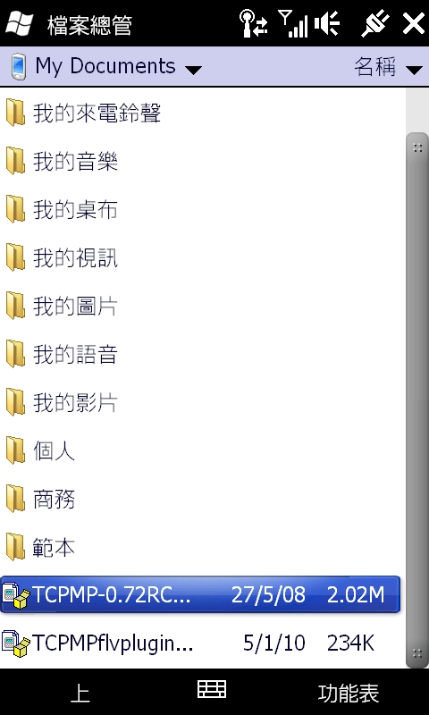
然後，透過 Windows 手機的檔案總管 (File Manager) 瀏覽已儲存兩個 CAB 檔案的資料夾。先點一下「TCPMP-0.72RC1-ARM-PPC-recomp-03.CAB」。
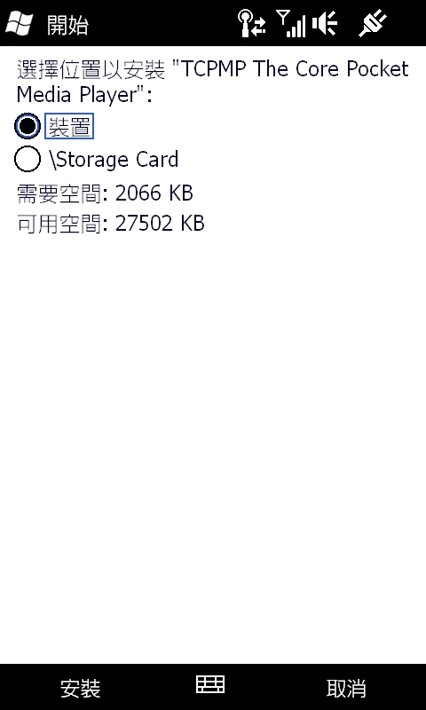
選擇「裝置」為安裝 TCPMP 的位置，再點一下 〔安裝〕。
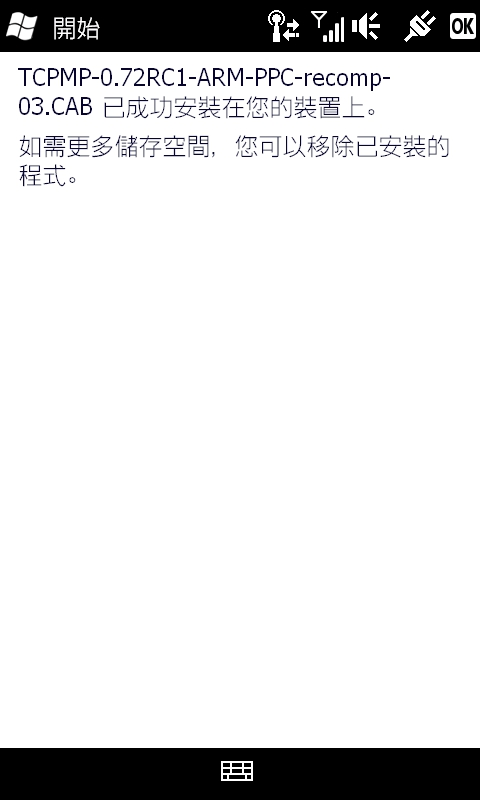
如無意外，TCPMP 便安裝至 Windows 手機裡了。接著重覆上述的步驟，點一下 TCPMP Plugin for Flash Video on PPC 的 CAB 檔，在 Windows 手機上安裝 TCPMP Plugin for Flash Video on PPC 。
◎ 取得 YouTube 影片的 ID
接下來，我們要取得 YouTube 影片的 ID，才能下載這個影片。先按 Windows 手機畫面左上角的視窗標誌，開啟「開始功能表」，然後點一下「Internet Explorer」。
然後在「網址列」上輸入網址「https://m.youtube.com/」，開啟 YouTube 的手機版本網頁。
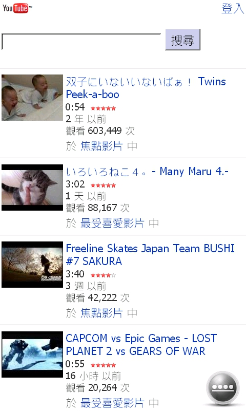
透過這個 YouTube 手機版，搜尋希望下載的影片，並進入影片的主頁。
這時候，檢查一下影片網頁的「網址列」，留意網址中的「watch?v=」與「&」中間的文字就是 YouTube 影片 ID 了。我們可以選取這一部份的文字，再點著已選取的文字約數秒，在即現式功能表中選取 【剪下】 或【複製】。
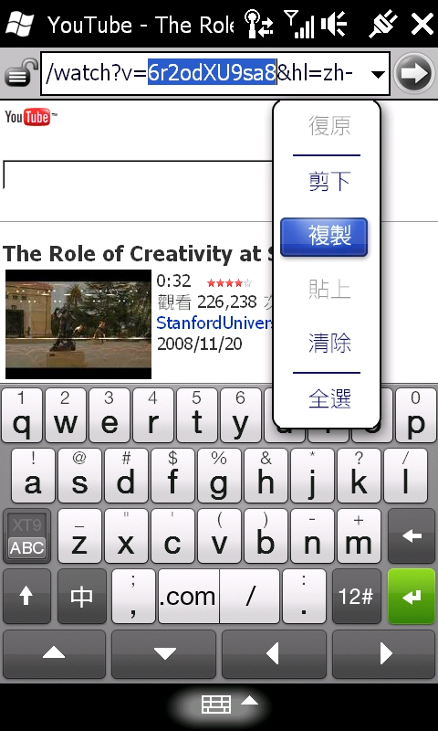
然後，在「網址列」上輸入網址「 https://mobytube.mobi/」，透過這個網頁，我們便可以下載剛才所選的 YouTube 影片。
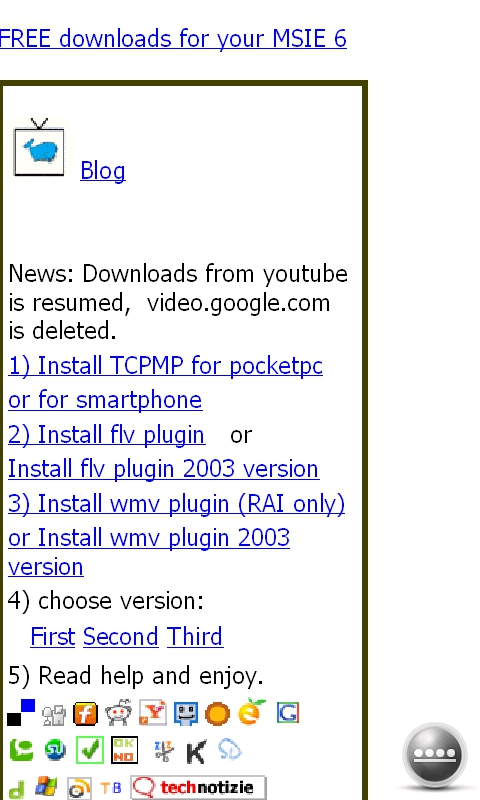
我們點選網頁中的「First」、「Second」或「Third」連結，基本上三個連結的效果大同小異。以下以「Second」連結作示範。進入「Second」網頁後，點著〔Search〕左方的文字欄位約數秒，在即現式功能表中選取 【貼上】。
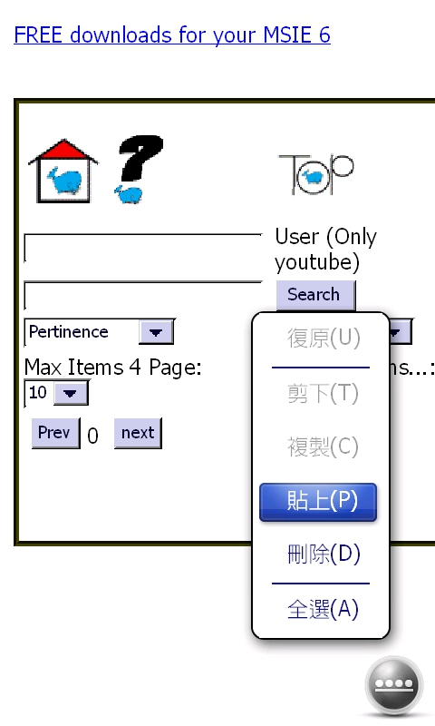
YouTube 的影片 ID 便會出現於〔Search〕左方的欄位。再點一下〔Search〕。
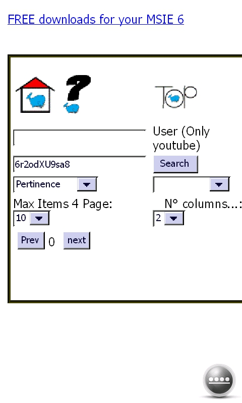
網頁中便會出現要下載 YouTube 影片的縮圖。確定無誤後，點一下影片縮圖下方的箭頭。
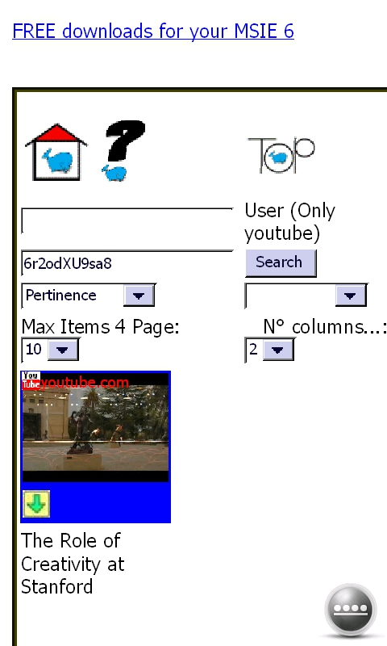
如無意外， Internet Explorer 便會詢問是否下載一個名為「video.flv」的檔案。取消「下載後開啟檔案」的核取方塊，然後點一下〔是〕。
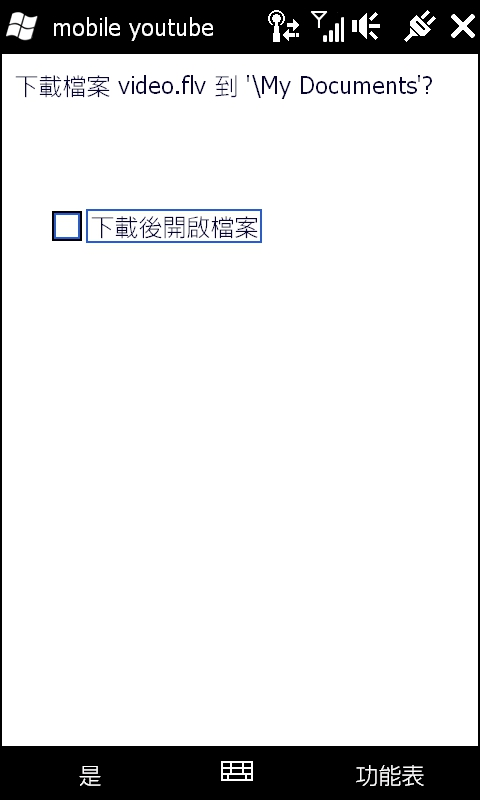
如果出現以下畫面，繼續取消「下載後開啟檔案」的核取方塊，然後點一下〔是〕。
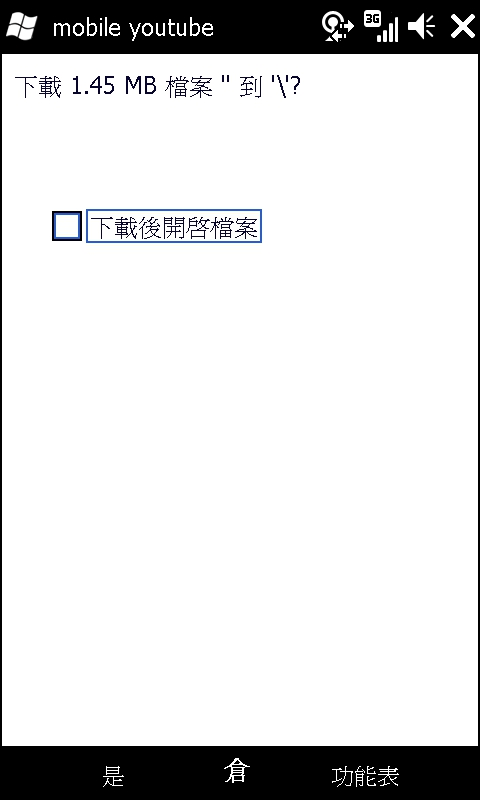
如無意外， Internet Explorer 便會下載這個「video.flv」檔案，並且儲存至 Windows 手機裡的「My Documents」資料夾。
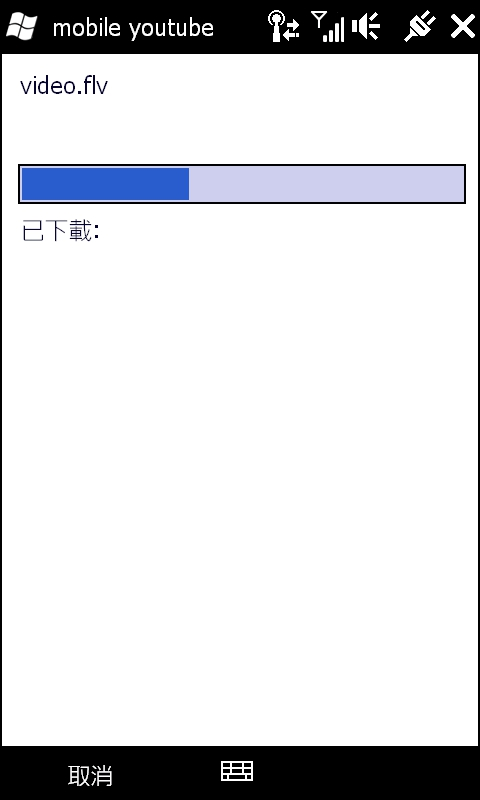
◎ 以 TCPMP 播放 FLV 檔案
接下來，我們便可以開啟 TCPMP 以及播放剛下載的 video.flv 檔案了。首先按 Windows 手機畫面左上角的視窗標誌，開啟「開始功能表」，然後點一下「 TCPMP 」。
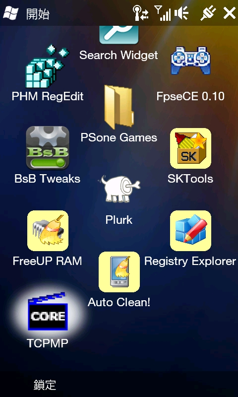
在 TCPMP 的功能表上點選【選取】，再點選【視訊】、【GDI】。
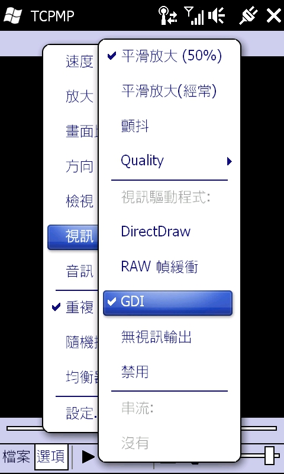
然後，在 TCPMP 的功能表上點選【檔案】，再點選【開啟檔案】。
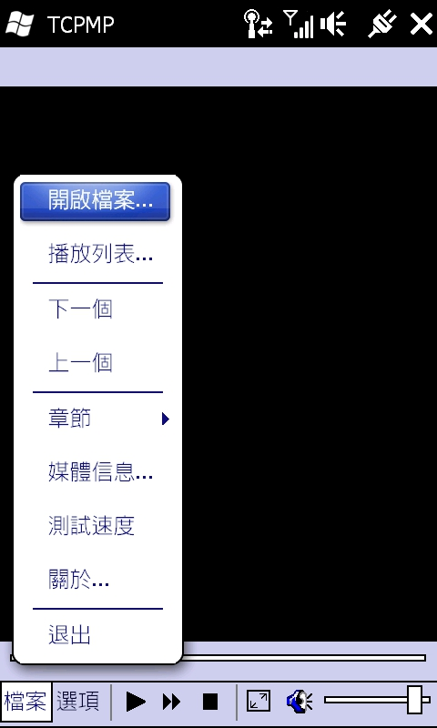
在「開啟檔案」畫面中選擇「\My Documents」，再選擇「video.flv」。點選【確定】。
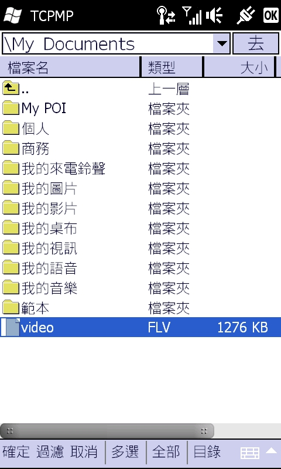
所選的影片便會在 TCPMP 開啟。點一下【選項】右方的按鈕便可播放影片了。

◎ 作者簡介
線人，求學時期曾經接觸過 Apple II 、 PC 等電腦系統，如今從事與智慧型手機有關的工作，每天的生活都是在不同作業系統（Windows、Mac OS、Linux，還有不同智慧型手機系統）之間遊走。
註：文中影片為 Stanford University 釋出，採 CC 授權「姓名標示─非商業性─禁止改作」分享。影片網址為：https://www.youtube.com/watch?gl=TW&hl=zh-TW&v=6r2odXU9sa8。
專欄總覽


E-Mail：contact@openfoundry.org Address：台北市南港區研究院路2段128號 中央研究院資訊科學研究所 . 隱私權條款. 使用條款